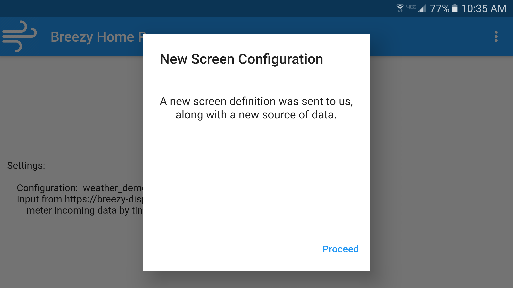
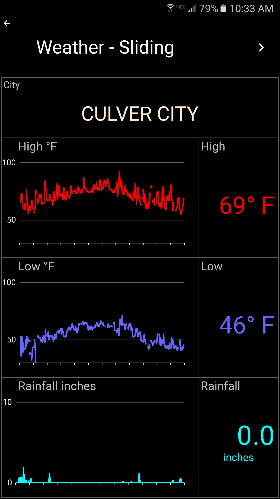
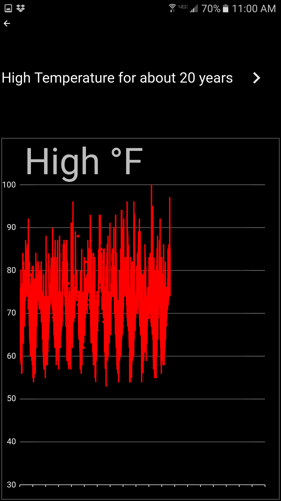

The Breezy Display App allows connection to an embedded controller, like an Arduino device. The device sends a data feed to the app, which displays it. The app can be configured for different screen layouts and different data feeds, with a straightforward JSON file. It can read data from a USB serial connection, Bluetooth/RFCOMM, a socket connection to a URL, or a server socket opened on the display device.
|

The data feed can include a screen configuration to define a new feed structure and a new screens. |  |  |
This app is being used in the Breezy Crisis Emergency Ventilator project operated through the
JOGL OpenCovid19
Initiative. Source is available in the
project's
GitHub repository under
display_app.
Breezy-Display is offered under the MIT License. Please refer to that license for information about fitness for any particular purpose. The app itself is a generic tool for visualizing data, and is in no way seeks to "capitalize on a natural disaster, atrocity, conflict, death, or other tragic event." Such applications are prohibited by the Google Play Sensitive Events Policy.
See the repository's README file for more information and documentation.
{kind=link}
{kind=link}
{kind=link}
{kind=link}